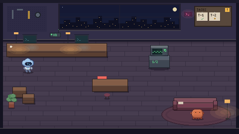

Art Direction 후보 3종
같은 상태(connected-passed: T-1 검증 통과, T-2 준비, 확인 요청 있음)를 세 방향으로 그렸다. 실제 크기 ×2 (480×270 → 960×540).
Concept A — Cozy Developer Studio (추천)

따뜻한 원목·세이지·저녁 램프. 캐릭터별 개인 책상, 가운데 검증 캐비닛과 코르크 상태 보드, 앞쪽 라운지.
장점
- 장시간 띄워 두기 편한 중간 명도
- 가구와 캐릭터가 같은 따뜻한 세계에 속함
- 보드·검증 장치가 생활 소품처럼 자연스러움
단점
- 에이전트가 늘면 방을 넓히거나 책상을 재배치해야 함
- 소품이 많아 에셋 수가 가장 많음
자체 점검 점수 82/100 (승인 아님)

팔레트
beamwallwall_lorailbasefloorfloor2seamlipwood_topwood_frontwood_rimglassframestarmooncurtainrugrug2rug_edgeleafleaf2potcorkcork_framecardmetalmetal_frontmetal_rimscreenmonitorfabricfabric_frontfabric_rimchairbook1book2book3book4warmcoolshadow
Concept B — Modern Pixel Lab

밝은 중성 타일, 모듈형 흰 책상(Pod)과 빈 Dock, 가운데 유리 검증 챔버, 벽면 상태 디스플레이.
장점
- 다중 에이전트 확장에 가장 유리 (Dock 슬롯)
- 상태 대비가 가장 명확
- 에셋이 단순해 제작이 빠름
단점
- 밝고 차가워 장시간 앰비언트로는 피로·무미건조
- 캐릭터의 따뜻함이 공간과 겉돎
자체 점검 점수 75/100 (승인 아님)

팔레트
beamwallwall_lorailbasefloorfloor2seamlipwood_topwood_frontwood_rimglassframestarmooncurtainrugrug2rug_edgeleafleaf2potcorkcork_framecardmetalmetal_frontmetal_rimscreenmonitorfabricfabric_frontfabric_rimchairbook1book2book3book4warmcoolshadow
Concept C — Midnight Workshop

어두운 자두색 작업실, 큰 야경 창, 긴 작업대와 클램프 램프의 따뜻한 빛 웅덩이, 오실로스코프 검증 카트, 작은 네온 하나.
장점
- 분위기와 몰입감이 가장 강함
- 빛 웅덩이로 시선 유도가 쉬움
단점
- 어두워 상태 색과 텍스트 대비 확보가 어렵다
- 조명 표현 비용이 가장 높음
- TUI의 '너무 어두움' 문제를 반복할 위험
자체 점검 점수 73/100 (승인 아님)

팔레트
beamwallwall_lorailbasefloorfloor2seamlipwood_topwood_frontwood_rimglassframestarmooncurtainrugrug2rug_edgeleafleaf2potcorkcork_framecardmetalmetal_frontmetal_rimscreenmonitorfabricfabric_frontfabric_rimchairbook1book2book3book4warmcoolshadowambient
Visual Quality 자체 점검
| 항목 | 배점 | A | B | C |
|---|---|---|---|---|
| 공간 구성·시각적 위계 | 15 | 12 | 11 | 11 |
| 픽셀 아트 일관성 | 15 | 12 | 12 | 11 |
| 캐릭터 매력·정체성 | 15 | 12 | 10 | 12 |
| 조명·분위기 | 10 | 8 | 5 | 9 |
| 가구·소품 완성도 | 10 | 8 | 7 | 7 |
| 개발 도구 UI 가독성 | 15 | 12 | 13 | 9 |
| 상태 표현 정확성 | 10 | 9 | 9 | 8 |
| 장시간 사용 적합성 | 5 | 5 | 3 | 3 |
| 확장·구현 가능성 | 5 | 4 | 5 | 3 |
| 합계 | 100 | 82 | 75 | 73 |
자기 점검용이며 디자인 승인이 아니다. 근거는 art-direction/SPEC.md §15.